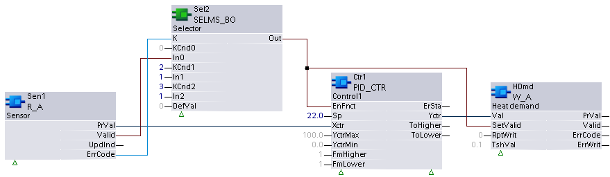

W_A: Write analog
W_A updates the Present value and Reliability properties of a calculated value object with a present value of datatype Real.
Compatible data points:
- Analog calculated value [ACalcVal]
Refer to data point objects for a detailed description of the BACnet data points.
Required properties:
- Present value
- Tracking value
- State flag
- Reliability
Pin description (inputs)
BaObjRef | |
|---|---|
BA-Object reference Structure [BaObjRef] defines a bound connection between XFB and BACnet object. The binding occurs automatically. Manual configuration attempts are not necessary and can result in system errors. | |
DeviceId | Device identifier Double word (default value: 16#3FFFFF) [DeviceId] comprises object type and object instance in a single identifier. It is used to identify device object: local or remote. Local device object could also be identified by value 16#3FFFFF. |
ObjectId | Object identifier Double word (default value: 16#3FFFFF) [ObjectId] comprises object type and object instance in a single identifier. It is used to identify object within a device. |
ItemId | Item identifier Integer (default value: -1) [ItemId] represents an item index in the functional view node object, which references the BACnet object. [ObjectId] and [ItemId] together define an indirect access reference to the BACnet object. Value -1 indicates that direct binding is used. |
TshVal |
|---|
Threshold value Real (default value: 0.1) A parameterized value used to control the XFB write attempts. An attempt is only allowed if the value difference is equal or greater than [TshVal]. Exception: the change equals a limit value such as 0.0 or 100.0 ([TshVal] is ignored). Note |
EnWrit |
|---|
Enable write Boolean (default value: True) When True, [EnWrit] enables the inputs Val and SetValid to be written to the calculated value object. |
Val |
|---|
Value Real (default value: 0.0) A virtual value calculated and assigned by the Control program to update Present value. [Val] is used to update the Tracking value property, after which the BACnet object internally updates Present value with the written Tracking value. [Val] will be written if [EnWrit] is True and any of the following:
|
SetValid | |
|---|---|
Set valid value indication Boolean (default value: True) A value calculated and assigned by the control program that indicates whether [Val] is reliable. [SetValid] maps to an error code that updates reliability if [EnWrit] is True and any of the following:
| |
1 (True) | Reliability error code 0 (no fault) |
0 (False) | Reliability error code 7 (unreliable - other) |
RptWrit | |
|---|---|
Repeat write Boolean (default value: False) [RptWrit] forces a write of inputs [Val] and [SetValid] to the data point. The write operation is repeated with each program cycle for as long as [RptWrit] is True. [RptWrit] will typically be calculated and set by the control program. Note: | |
1 (True) | If [EnWrit] is True, [Val] and [SetValid] are written to the data point with each program cycle for as long as [RptWrit] is True. |
0 (False) | No action |
Pin description (outputs)
PrVal |
|---|
Present value Real (default value: 0.0) The value of the present value property from the referenced BACnet object. [PrVal] will deliver the last valid value if [Valid] = False. |
Valid | |
|---|---|
Valid Boolean (default value: False) An indication of whether output pin [PrVal] is reliable. | |
1 (True) | [PrVal] is reliable.
AND
|
0 (False) | [PrVal] is not reliable.
OR
|
ErrCode | |
|---|---|
Error code indication Integer (default value: 20) The status of the last performance of the XFB read operation. | |
= 0 | No error. |
> 0 | Error, see XFB error codes. |
ErrWrit | |
|---|---|
Error while writing Integer (default value: 20) The status of the last execution of the XFB write operation. | |
= 0 | No error. |
> 0 | Error, see XFB error codes. |
Use case examples
NOTICE

Note
Graphics reflect examples of XFB implementations; See ABT for current examples of CFC.
Calculated demand of a radiator heating sequence: The Control program writes the heating demand, which is represented by a virtual calculated value, to the analog calculated value object.
